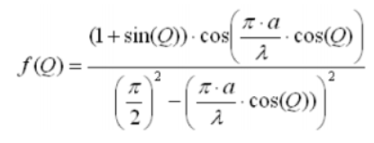
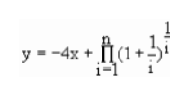
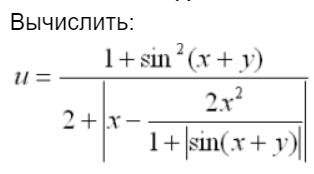
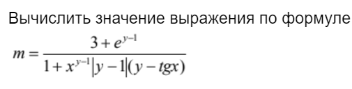

Самостоятельная работа 1

Детерминированный циклический вычислительный процесс с управлением по аргументу. Численное интегрирование
Научиться организации ДЦВП с управлением по аргументу на примере численного интегрирования
ПК, среда программирования PascalABC
Постановка задачи:
Решить выражение методом левых частей.

program metodLch; var x,y,h:real; begin y:=0; h:=0.06; x:=0.2; while x<=0.8-h do begin y:=y+(sin((2*x+0.5)*pi/180)/(2+cos((x*x+1)*pi/180))); x:=x+h; end; y:=y*h; writeln (y:10:6); end.

Анализ полученных результатов:
Выполняя работу, я использовал для вычислений оператор “while”. При введении пропорциональных значений величины шага (0,06;0.006 и т.д.) получались примерно одинаковые, но не идентичные, результаты. Так получалось из-за погрешности, существующей в самой математической формуле.
Постановка задачи:
Решить выражение методом правых частей.
program metodPRch; var x,y,h:real; begin y:=0; h:=0.06; x:=0.2+h; while x<=0.8 do begin y:=y+(sin((2*x+0.5)*pi/180)/(2+cos((x*x+1)*pi/180))); x:=x+h; end; y:=y*h; writeln (y:10:6); end.

Анализ полученных результатов:
Выполняя работу, я использовал для вычислений оператор “while”. При введении пропорциональных значений величины шага (0,06;0.006 и т.д.) получались примерно одинаковые, но не идентичные, результаты. Так получалось из-за погрешности, существующей в самой математической формуле. Различие с предыдущей задачей состоит в том, что нижний предел в интеграле там был равен 0,2, а верхний - 0,8-h. Здесь же, наоборот, нижний - 0,2+h, а верхний - 0.8.
Постановка задачи:
Решить выражение с помощью метода трапеций

program metodTRAP; var a,b,r,n,x,y,h:real; begin a:=0.2; b:=0.8; y:=0; h:=0.06; x:=0.2+h; r:=sin((2*a+0.5)*pi/180)/(2+cos((a*a+1)*pi/180)); n:=sin((2*b+0.5)*pi/180)/(2+cos((b*b+1)*pi/180)); while x<=0.8-h do begin y:=y+(sin((2*x+0.5)*pi/180)/(2+cos((x*x+1)*pi/180))); x:=x+h; end; y:=(y+(r+n)/2)*h; writeln (y:10:6); end.

Анализ полученных результатов:
Выполняя данную задачу, я вводил дополнительные идентификаторы для значений функции в точках. При введении пропорциональных значений величины шага (0,06;0.006 и т.д.) получались примерно одинаковые, но не идентичные, результаты. Так получалось из-за погрешности, существующей в самой математической формуле.
Постановка задачи:
Решить выражение с помощью метода парабол

program metodPAR; var s,l,a,b,r,n,x,y,h:real; begin a:=0.2; b:=0.8; y:=0; h:=0.06; x:=0.2+h; l:=0.2+2*h; r:=sin((2*a+0.5)*pi/180)/(2+cos((a*a+1)*pi/180)); n:=sin((2*b+0.5)*pi/180)/(2+cos((b*b+1)*pi/180)); while x<=0.8-h do begin y:=y+(sin((2*x+0.5)*pi/180)/(2+cos((x*x+1)*pi/180))); x:=x+2*h; end; while l<=0.8-2*h do begin s:=s+(sin((2*l+0.5)*pi/180)/(2+cos((l*l+1)*pi/180))); l:=l+2*h; end; y:=h/3*(r+n+4*y+2*s); writeln (y:10:6); end.
Анализ полученных результатов:
Выполняя данную задачу, я ввел дополнительный оператор “while”, так как при решении данным методом нужно использовать две функции “Суммы”. При введении пропорциональных значений величины шага (0,06;0.006 и т.д.) получались примерно одинаковые, но не идентичные, результаты. Так получалось из-за погрешности, существующей в самой математической формуле.
Сводная таблица результатов

Вывод
При сравнении результатов вычислений, приведенных в таблице, можно сделать два вывода: во-первых, количество разбиений напрямую влияет на результат вычисления, а точнее на погрешность при вычислении. Чем больше разбиений мы сделаем, тем точнее будет результат. Во-вторых, метод парабол является самым точным из приведенных и не так чувствителен к количеству разбиений, как другие методы, потому что разброс в значениях у него не столь велик, как у остальных методов.
Составить список электронных музеев ЭВМ


Детерминированные циклические вычислительные процессы с управлением по аргументу
Научиться вычислять детерминированные циклические вычислительные процессы с управлением по аргументу
ПК, среда программирования PascalABC
Постановка задачи:
Вычислить n!, где n вводится с клавиатуры.

program p1; var i,n:integer; s:longint; begin s:=1; writeln ('Введите любое целое число'); readln (n); for i:=1 to n do begin s:=s*i; end; writeln (s); end.
Анализ полученных результатов:
К переменной результата был применен тип longint, так как тип integer в данном случае не подходит, ведь при его помощи невозможно рассчитывать факториалы больших чисел.
Постановка задачи:
Рассчитать значения для построения диаграммы направленности антенны в вертикальной плоскости.

program p2; var Q:integer; chast,COSin,SINus,Chisl,Znam,F:real; begin chast:=Pi*13,5/3; for Q:=0 to 90 do begin COSin:=cos(Q); SINUS:=sin(Q); Chisl:=(1+SINUS)*cos(chast*COSin); Znam:=(Pi/2)*(Pi/2)-(chast*COSin)*(chast*COSin); F:=Chisl/Znam; writeln ('F(',Q,') равняется ', F:5:2); end; end.

Анализ полученных результатов:
Выполняя данную работу, разбил основное выражение на несколько маленьких, после чего вычислил ответ. Организовал цикл и вывод результата после прохождения каждого нового значения через него.
Постановка задачи:
Вычислить y при исходных n=25, x= -2.1 по формуле:

program p3; var i:integer; y,pr,x,ch:real; begin x:=4*2.1; y:=0; pr:=1; for i:=1 to 25 do begin ch:=1/i; pr:=pr*exp(ln(1+ch)*ch); end; y:=x+pr; writeln ('y равен ',y); end.
Анализ полученных результатов:
При выполнении задания совершил предварительные вычисления в цикле, а финальное - единожды. Также использовал при возведении в степень формулу с экспонентой и натуральным логарифмом для уменьшения времени работы программы.
Постановка задачи:

program p4; var n,i:integer; y,V1,V2,ch1,ch2,zn1,zn2:real; begin writeln ('Введите число n,большее,чем 2'); readln (n); ch1:=0; zn2:=0; ch2:=1; zn1:=1; for i:=2 to n do begin V1:= i*i; V2:=i/(i+2); ch1:=ch1+V1; ch2:=ch2*V2; zn1:=zn1*V1; zn2:=zn2+V2; end; y:=(3*ch1+ch2)/(zn1+2*zn2); writeln ('При n равном ',n,' y равен ',y); end.

Анализ полученных результатов:
При выполнении задания разбил большое выражение на более малые для ускорения работы программы. Все предварительные вычисления производил в цикле, а финальное - единожды.
Вывод:
В ходе проделанной работы освоил способ реализации детерминированного циклического вычислительного процесса с управлением по аргументу.
Линейные вычислительные процессы
Реализовать линейный вычислительный процесс средствами PascalABC
ПК, среда программирования PascalABC
Постановка задачи:
Даны числа 7 и 5. Определить результат вещественного деления, целочисленного деления и найти остаток от целочисленного деления.

program p2; const x=7;y=5; var d,cel,ost:real; begin d:=x/y; cel:=x div y; ost:=x mod y; writeln ('Частное равняется ', d:2:1); writeln ('Целочисленная часть равняется ', cel); writeln ('Остаток равняется ', ost); end.
Анализ полученных результатов:
Выполняя задание применил такие операции, как / - вещественное деление, div - целочисленное деление и mod - нахождение остатка от целочисленного деления.
Постановка задачи:
program p2; var x,y,u,sinus:real; begin writeln ('Введите последовательно значения x и y'); readln(x,y); sinus:=sin(x*Pi/180+y*Pi/180); u:=(1+sinus*sinus)/(2+abs(x-2*x*x/(1+abs(sinus)))); writeln ('Значение u равно ',u:5:2); end.
Анализ полученных результатов:
Выполняя данную работу, я упрощал большое выражение, превратив значение синуса в просто число заранее, чтобы ускорить процесс расчета. Также, для удобства при использовании, сократил количество знаков после запятой до двух.
Постановка задачи:

program p3; var x,y:integer; m,raznost,chis,znam:real; begin writeln ('Введите значение х'); readln (x); writeln ('Введите значение у'); readln (y); raznost:=y-1; chis:=3+exp(ln(2.7)*raznost); znam:=(1-exp(ln(x)*raznost)*abs(raznost)*(y-tan(x))); m:=chis/znam; writeln ('Значение m равняется ',m:5:2); end.

Анализ полученных результатов:
Выполняя данное задание, я разложил большое выражение на несколько более мелких и простых, дабы упростить и ускорить процесс расчета, а также узнал, как в среде PascalABC возводить в степень, которая состоит из переменных. Для удобства при использовании сократил число знаков после запятой в ответе до двух.
Постановка задачи:
С клавиатуры вводится трехзначное число. Вычислить сумму его цифр.
program p4; var r,x,y,z:integer; m:real; begin writeln ('Введите трехзначное число'); readln (r); x:=r div 100; y:=r mod 100 div 10; z:=r mod 10; m:=x+y+z; writeln ('Сумма цифр числа равна ',m); end.

Анализ полученных результатов:
mod - нахождение остатка от целочисленного деления, и комбинировал их.
Постановка задачи:
Ввести трехзначное число а. Поменять крайние цифры числа местами.

program p5; var a,x,y,z:integer; begin writeln ('Введите исходное трехзначное число'); readln (a); x:=a div 100; y:=a mod 100 div 10; z:=a mod 10; a:=z*100+y*10+x; writeln ('Получилось число ', a); end.
Анализ полученных результатов:
Выполняя данное задание, применил такие действия над значениями, как div - целочисленное деление и mod - нахождение остатка от деления, а затем из полученных результатов скомбинировал новое число, как гласило задание.
Постановка задачи:
Выяснить, на каком этаже, в каком подъезде 9-этажного дома живет друг, если известен номер его квартиры, а так;е, что на каждом этаже располагается 4 квартиры. Номер интересующей нас квартиры вводится с клавиатуры. Вывести номер подъезда и номер этажа, на котором живет друг.
program r6; var x, i, j: integer; begin writeln ('Введите номер квартиры'); readln (x); i:=(x-1) div 36 +1; j:=((x-(i-1)*36)-1) div 4 +1; writeln ('Подъезд ', i, ', этаж ', j); end.

Анализ полученных результатов:
В ходе выполнения работы был создан алгоритм, который способен по номеру квартиры вычислить ее точное местоположение. А именно: номер подъезда и номер этажа.
Вывод:
В ходе выполнения лабораторной работы я научился работать с линейными вычислительными процессами при помощи различных действий над данными, а именно: сложения, вычитания, целочисленного деления, умножения, вещественного деления, вычисления остатка от деления и возведения в степень. Для ускорения работы программы я разбивал большие модули выражений на более простые и емкие.